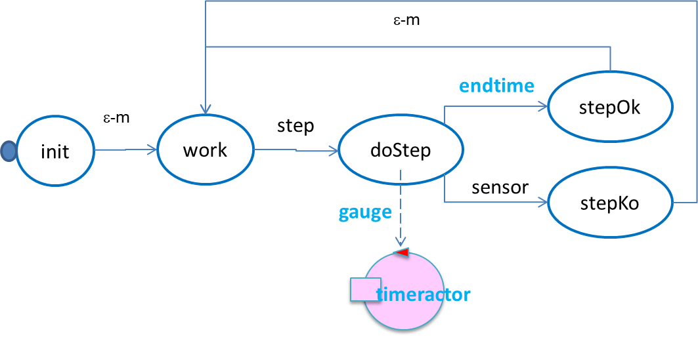
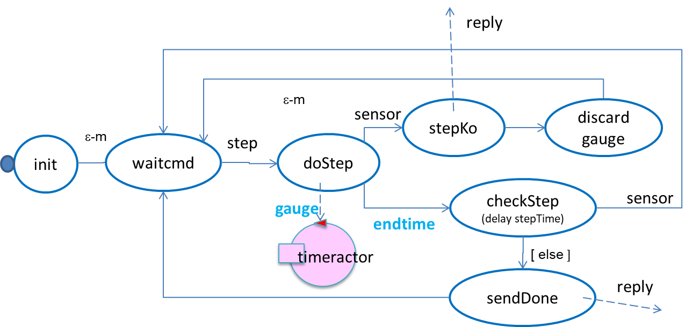

- Introduction
- QActors at work
- Requirement analysis
- Problem analysis
- The logical architecture
- Towards DevOps
- Project
Introduction
Let us recall the path we have covered so far:- we started by introducing a problem (the
'boundary-robot' problem ) to be solved with Kotlin actors. The problem was defined by the set of requirements reported in:
RobotActorBoundary | A first actor-based robot-application.
In this phase we introduced a quite simple firstlogic architecture :
The interaction between the actors was based on a 'fire-and-forget' operation (namedforward ) and on the concept of a message as adispatch .
- in order to define a proper
TestPlan , we introduced the idea that a robot should be able to move in 'step-wise' way in order to be able to represent its position on a grid-based representation of the room: RobotActorBoundary | From test plans to a layered architecture.
In this phase, ourdesign was a layered architecture, whose layers are implemented by one or more actors, each working as a Finite State Machine:
The technological details of the robot were hiddin behind proper 'technology aware' low-levl support (the virtualRobotSupportApp) by allowing the higher levels to focus on the application logic only.
- the next step was the implementation of the first logical layer (the
'basicrobot' ) by using acustom DSL :
FSM | A kotlin-based DSL)
to better express the behavior of the actors as a Finite State Machine:
basicrobot | A reusable actor (towards 'microservices');
- the vision of working 'towards microservices' was supported by the capability of our abstract
FSM class to provide also aversion of the high-levelforward operation with reference toMQTT broker. We made also some experiment to move a 'basicrobot' by sending commands from a remote site;
- the implementation of the
'stepper' was fast, but quite simplistic, since we did not take into account a typical problem in distributed systems: the fact that information sent as a message takes time to be delivered and thus to be perceived by a receiver. Our 'stepper' was designed as follows: The idea was the following one:- the state doStep creates a timeractor that sends the message
endtime virtualrobotsupportApp the command to move ahead ('w'); - if the robots hits an obstacle, the 'basicrobot' sends (via
virtualrobotsupportApp ) the messagesensor - if
sensor ts andendtime te andts < te , then the stepper should go in the statestepKo
But the problem is that - sometimes, not always - the 'stepper' could perceive the messageendtime BEFORE sensor ts < te .
Fortunately, this (paradigmatic) problem was discovered during testing: TestPlanBoundary.kt.
Another problem is thatendtime
A possible new solution could be:
However, since testing does not assure the discovery of all possible errors, the lesson learned from these problem persuaded us ofthe need of a more accurate analysis phase
and of the opportunity offast-prototyping the application logic - the state doStep creates a timeractor that sends the message
- at this point (during a SCRUM
sprint-retrospective ) we decided to introduce a custom software factory based on acustom metamodel , by exploiting the XText technology:
LabQakIntro2020.html | Introduction to QAkactors.
QActors at work
As said in LabQakIntro2020.html | QActors and process development, the goal was to enable application designers to define aThe possibility to execute a model of a system as the result of the problem analysis phase can be very useful:
- to establish a more productive interaction with the customer in order to better understand the requirements
- to help in defining the product backlog
- to introduce proper functional test-plans in form of program-sketches
The effort of building formal (i.e. executable) models of a system in the early phases of software development
should be remunerated by a better management of
the development process, that can be accomplished by 'zooming' into the set of components identified by the logical architecture
and by adding (if needed ) other appropriate components, without breaking the constraints settled in the analysis phase.
In this work, we intend to give an example of a process of thik kind, by introducing a set of executable QAkactor models for the 'robotboundary' problem.
Requirements
The detailed requirements of our problem are those introduced in RobotActorBoundary | requirementsRequirement analysis
In this phase we are able to define a model of the 'robotboundary' actor and a first TestPlan:
The model boundaryrobot.qakThe event |
|
The test plan testRobotboundary.kt
lateinit var robot : |
However, there is also the possibility to 'test' the behavior of the actor by means of programs working on others (remote) machines. Aliens
|
Collision eventsIn our case, the solution is simplified by the fact that a collision event cannot arise when the robot is stopped. Thus, we can generate collision events during a testing phase:
The important point is that
We do not need any concrete robot in order to reason about requirements and on the logical behavior of the system.
|
EventThe actor 'obstaclesimulator' emits a 'collision' event only when the 'robotboundary' tells it to do so, by generating a 'simulateobstacle' event. We might also introduce an actor external to the Qak model; for example: simulator.kt This actor can be made part of the system by using the
|
Problem analysis
1 - measure the abstraction gap
Since we must use the
QAkActor support, there is no abstraction gap.
The effort/resources necessary to build the system are quite limited: we should terminate in half a day, at most.
2 - define the logical architecture of the system
Our first model of the 'robotboaudary' is based on the requirement that our actor must "move the robot along the boundary of an empty-room".
But our subsequent work, we envisaged the opportunity:
- to avoid any reference at application level to the technological details of any concrete robot, by introducing a proper
adapter - to move the robot is a
step-wise way in order to have a more precise representation (grid-based) of its position in the room - to embed the basic behavior of the robot in a (
un-opinionated ) 'basicrobot' actor
- the 'basicrobot' - once defined and developed - can be reused in several, different applications;
- all the technological details of the concrete robot (e.g. a Virtual robot) are embedded into the 'basicrobot';
- the 'basicrobot' is not just an executor of commands, but also a source of information, generated by its sensors
(the event
collision is just an example); - any component that aims at working a 'mind' with respect to the 'basicrobot' must known the way to properly interact with it, both for sending commands and for perceiving information.
3 - define the product backlog : the 'body' and the 'mind'
In our analysis, the 'basicrobot' is just a 'slave' that executes commands (sometimes we will refer to it as 4 - refine the functional TestPlans
The test plan testRobotboundary.kt introduced in requirement analysis, can be refined
by inserting proper interactions with the 'basicrobot'
Towards DevOps
At this point of our analysis, we should agree on the idea of introducing- the project it.unibo.qak2.0.basicrobot related to the 'basicrobot'
- the project it.unibo.qak20.robotboundary related to the 'robotboundary'
This 'divide-et-impera' approach seems quite attractive, but it has its own drawbacks. In particular, from the point of view of the team devoted to the 'basicrobot', we can say that:
the 'basicrobot' cannot known in advance the components that will interact with it
Project
Thus, let us move to our two projects- it.unibo.qak2.0.basicrobot: Qak20Basicrobot.html.
- it.unibo.qak20.robotboundary: Qak20Robotboundary.html.